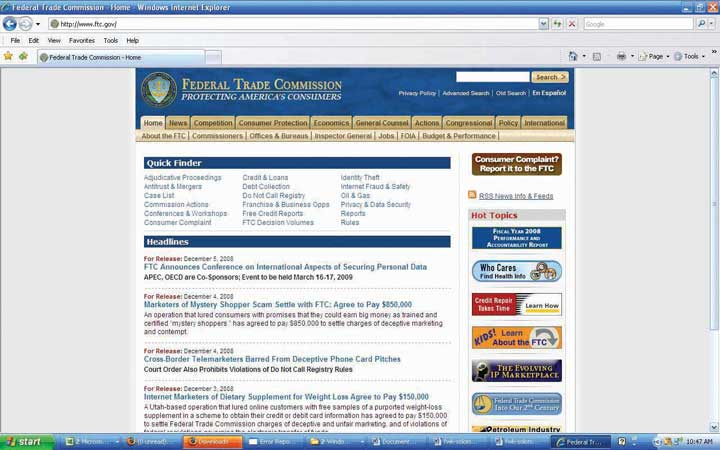

After studying this section, students should be able to do the following:
The United States government has numerous agencies whose mandates include regulating advertising and other marketing activities. These include the Federal Trade Commission, the Federal Communications Commission, the Food and Drug Administration, the Securities and Exchange Commission, the Environmental Protection Agency, and the Department of Agriculture.
The Federal Trade Commission (FTC)U.S. government agency established in 1914 to promote “consumer protection” and to monitor “anticompetitive” business practices. was established in 1914 to promote “consumer protection” and to monitor “anticompetitive” business practices. Within the FTC, the Bureau of Consumer Protection works to protect against abuses in advertising as well as other areas such as telemarketing fraud and identity theft. The bureau is also responsible for the United States National Do Not Call Registry, which allows consumers to opt out of receiving telemarketers’ calls on their home or mobile phones (https://www.donotcall.gov).
Figure 3.6
The Federal Trade Commission protects consumers.
The FTC’s Division of Advertising Practices enforces federal truth-in-advertising laws. Its law enforcement activities focus on the accuracy of claims for foods, drugs, dietary supplements, and other products promising health benefits; advertising to children; performance claims for computers and other high-tech products; tobacco and alcohol advertising; and related issues. FTC investigations may pertain to a single company or an entire industry. If the results of the investigation reveal unlawful conduct, the FTC may seek voluntary compliance by the offending business, or its lawyers may choose to take the case to court.Federal Trade Commission, “A Guide to the Federal Trade Commission,” http://www.ftc.gov/bcp/edu/pubs/consumer/general/gen03.shtm (accessed July 19, 2008).
The Federal Communications Commission (FCC)U.S. government agency, established by the Communications Act of 1934, that regulates interstate and international communications by radio, television, wire, satellite, and cable. was established by the Communications Act of 1934. It regulates interstate and international communications by radio, television, wire, satellite, and cable.
The FCC monitors the proper use of broadcast media. As an example of a current issue that could have major repercussions for the advertising industry, the FCC recently initiated a formal inquiry into the degree to which networks have to disclose whether advertisers have paid to have products embedded in TV shows and movies (a widespread practice the industry calls product placement).
According to the FCC, as product placement becomes more widespread, its rules must “protect the public’s right to know who is paying to air commercials or other program matter on broadcast television, radio and cable.” But it added that the rules must be considered in light of “the First Amendment and artistic rights of programmers.” One possible outcome is that the agency will mandate that when a sponsored product appears on the screen this placement will have to be disclosed simultaneously—perhaps with lettering that covers at least 4 percent of the screen and lasts for at least four seconds. Also up for debate is whether disclosures should be required before or perhaps even before and after a show that includes product integrations.David Goetzl, “Game-Changer: FCC Considers Product Placement Disclosures,” Media Daily News, June 30, 2008, https://www.mediapost.com/publications/index.cfm?fa=Articles.showArticle&art_aid=85685 (accessed July 19, 2008).
To discourage the need for the government to pass additional legislation that would restrict its activities, advertising agencies vigorously police themselves to minimize abuses. To do this, the advertising industry created the National Advertising Review Council (NARC—no, not that kind of narc) in 1971. This group is a strategic alliance among four major trade organizations: the AAAA (American Association of Advertising Agencies), the ANA (Association of National Advertisers), the AAF (American Advertising Federation), and the Council of Better Business Bureaus Inc.
This system maintains two bodies that investigate claims of abuse or deception: the National Advertising Division (NAD)Division of the National Advertising Review Council (NARC), a strategic alliance among four major trade organizations, that investigates complaints against advertisers. and the Children’s Advertising Review Unit (CARU)Division of the National Advertising Review Council (NARC), a strategic alliance among four major trade organizations, that investigates complaints against advertising directed at children.. If an advertiser disagrees with NAD or CARU decisions, it can appeal to the National Advertising Review BoardA body of the National Advertising Review Council (NARC), a strategic alliance among four major trade organizations, that resolves disputes over advertising investigated by NAD or CARU.. The system covers advertising in traditional media as well as on the Internet. The large majority of cases get settled through this route—95 percent, in fact.American Association of Advertising Agencies, “Working with the Industry,” http://www2.aaaa.org/advocacy/industry/Pages/default.aspx (accessed July 19, 2008); National Advertising Review Board, http://www.narbreview.org (accessed July 19, 2008); Federal Communications Commission, “About the FCC,” http://www.fcc.gov/aboutus.html (accessed July 19, 2008).
A 2007 case involving a very public dispute between two online dating services illustrates how the NAD works to insure that advertising is as fair and accurate as possible. One site, Chemistry.com, claims in its advertising that answers to questions like “Do you watch people kissing in public?” and “Is your ring finger longer than your index finger?” can predict whether the people it matches up are likely to have “dating chemistry.” The site’s rival eHarmony.com objected to this claim and brought its charge to the NAD. After investigating the scientific basis for the claim, the division ruled that indeed Chemistry could not support its argument. As a result, the matchmaker has to find other ways to compete for the $700 million Americans spend each year to find their dream mate online.Jessica E. Vascellaro, “Regulators Say Love Ain’t ‘Chemistry’ After All: Scientific Claim by Dating Service Comes Under Fire,” Wall Street Journal, September 17, 2007, B5.
The Interactive Advertising Bureau was founded in 1996 to represent over 375 companies that conduct business in cyberspace. Its members sell about 86 percent of the online advertising that gets placed in the United States. The IAB evaluates and recommends standards and very specific practices to govern what interactive ads can and cannot do. For example, it mandates that an advertiser wishing to use a pop-up ad can show the message only one time during a person’s visit to an online site. Furthermore, the pop-up must be clearly labeled with the name of the network, the advertiser, and the publisher; there are limits on how big the image can be, and it must offer a “close box” so the user can choose to shut it down.Interactive Advertising Bureau, “Pop-Up Guidelines,” http://www.iab.net/iab_products_and_industry_services/1421/1443/1461 (accessed July 19, 2008).
The Word of Mouth Marketing Association (WOMMA) is the official trade association for the word-of-mouth marketing industry. The organization promotes “best practices” and sets standards to regulate how “buzz marketers” interact with consumers. This has been an important issue due to some early buzz campaigns in which professional actors pretended to be everyday consumers in public places like tourist areas and bars, where they told other people about the advantages of using a particular product or service. Today WOMMA’s members must adhere to a code of ethics that the group summarizes as the Honesty ROI:
The Direct Marketing Association represents more than thirty-six hundred companies, based in forty-seven countries, that employ direct marketing tools and techniques. It provides information to help consumers recognize fraudulent practices as well as to remove themselves from mailing or call lists.Direct Marketing Association, http://www.dmachoice.org/consumerassistance.php (accessed July 19, 2008).
Numerous organizations monitor the advertising industry to detect instances of false or deceptive advertising. The government enforces rules regarding content through federal agencies such as the FTC and the FCC. In addition, the industry vigorously polices itself to try to head off problems before the legal authorities must deal with them. As new media platforms continue to evolve (such as product placement and word-of-mouth marketing), the industry needs to be vigilant about tracking these applications to prevent additional abuses.